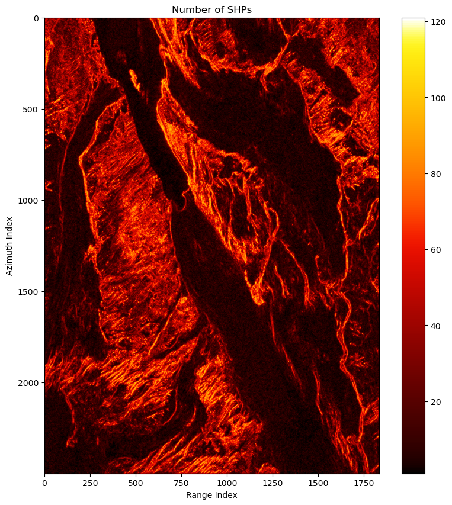

# rslc = '../../data/rslc.zarr'
rslc = './raw/rslc.zarr'
pvalue = './pvalue.zarr'shp
Spatially Homogenious Pixels Identification
de_shp_test
de_shp_test (rslc:str, pvalue:str, az_half_win:int, r_half_win:int, method:str=None, az_chunk_size:int=None, log:str=None)
SHP identification through hypothetic test.
| Type | Default | Details | |
|---|---|---|---|
| rslc | str | input: rslc stack | |
| pvalue | str | output: the p value of the test | |
| az_half_win | int | azimuth half window size | |
| r_half_win | int | range half window size | |
| method | str | None | SHP identification method,optional. Default: ks |
| az_chunk_size | int | None | azimuth chunk size, optional. Default: the azimuth chunk size in rslc stack |
| log | str | None | log file, optional. Default: no log file |
This function is a wrapper of functions in decorrelation.shp that provides file interface. Please refer it for the usage. It utilizes dask for parallel and distributed computation. Compared with the functions in decorrelation.shp, this function splits the dataset into several chunks and the computation in these chunks can run in parallel on multi-GPUs.
The r_chunk_size and az_chunk_size is used to determine how many pixels in range and azimuth in one chunk. The chunk size of the output pvalue is also setted according to them.
de_shp_test(rslc,pvalue,az_half_win=5,r_half_win=5, method=None,az_chunk_size=1000,log='de_shp_test.log')2023-09-20 17:36:48 - de_shp_test - INFO - fetching args:
2023-09-20 17:36:48 - de_shp_test - INFO - rslc = './raw/rslc.zarr'
2023-09-20 17:36:48 - de_shp_test - INFO - pvalue = './pvalue.zarr'
2023-09-20 17:36:48 - de_shp_test - INFO - az_half_win = 5
2023-09-20 17:36:48 - de_shp_test - INFO - r_half_win = 5
2023-09-20 17:36:48 - de_shp_test - INFO - method = None
2023-09-20 17:36:48 - de_shp_test - INFO - az_chunk_size = 1000
2023-09-20 17:36:48 - de_shp_test - INFO - log = 'de_shp_test.log'
2023-09-20 17:36:48 - de_shp_test - INFO - fetching args done.
2023-09-20 17:36:48 - de_shp_test - INFO - hypothetic test method: ks
2023-09-20 17:36:48 - de_shp_test - INFO - rslc dateset shape: (2500, 1834, 17)
2023-09-20 17:36:48 - de_shp_test - INFO - rslc dataset chunks: (1000, 1834, 1)
2023-09-20 17:36:48 - de_shp_test - INFO - parallel processing azimuth chunk size: 1000
2023-09-20 17:36:48 - de_shp_test - INFO - starting dask CUDA local cluster.
2023-09-20 17:36:54 - de_shp_test - INFO - dask local CUDA cluster started.
2023-09-20 17:36:54 - de_shp_test - INFO - rslc dask array shape: (2500, 1834, 17)
2023-09-20 17:36:54 - de_shp_test - INFO - rslc dask array chunks: ((1000, 1000, 500), (1834,), (17,))
2023-09-20 17:36:54 - de_shp_test - INFO - azimuth half window size: 5; azimuth window size: 11
2023-09-20 17:36:54 - de_shp_test - INFO - range half window size: 5; range window size: 11
2023-09-20 17:36:54 - de_shp_test - INFO - setting shared boundaries between rlsc chunks.
2023-09-20 17:36:54 - de_shp_test - INFO - rslc dask array with overlap shape: (2520, 1834, 17)
2023-09-20 17:36:54 - de_shp_test - INFO - rslc dask array with overlap chunks: ((1005, 1010, 505), (1834,), (17,))
2023-09-20 17:36:55 - de_shp_test - INFO - rmli dask array with overlap shape: (2520, 1834, 17)
2023-09-20 17:36:55 - de_shp_test - INFO - rmli dask array with overlap chunks: ((1005, 1010, 505), (1834,), (17,))
2023-09-20 17:36:55 - de_shp_test - INFO - applying test on sorted rmli stack.
2023-09-20 17:36:55 - de_shp_test - INFO - p value generated
2023-09-20 17:36:55 - de_shp_test - INFO - p value shape: (2520, 1834, 11, 11)
2023-09-20 17:36:55 - de_shp_test - INFO - p value chunks: ((1005, 1010, 505), (1834,), (11,), (11,))
2023-09-20 17:36:55 - de_shp_test - INFO - trim shared boundaries between p value chunks
2023-09-20 17:36:55 - de_shp_test - INFO - trimmed p value shape: (2500, 1834, 11, 11)
2023-09-20 17:36:55 - de_shp_test - INFO - trimmed p value chunks: ((1000, 1000, 500), (1834,), (11,), (11,))
2023-09-20 17:36:55 - de_shp_test - INFO - saving p value.
2023-09-20 17:36:55 - de_shp_test - INFO - computing graph setted. doing all the computing.
2023-09-20 17:36:59 - de_shp_test - INFO - computing finished.
2023-09-20 17:37:01 - de_shp_test - INFO - dask cluster closed.
CPU times: user 862 ms, sys: 1.71 s, total: 2.57 s
Wall time: 13.3 s2023-09-20 17:36:50,631 - distributed.preloading - INFO - Creating preload: dask_cuda.initialize
2023-09-20 17:36:50,631 - distributed.preloading - INFO - Import preload module: dask_cuda.initialize
2023-09-20 17:36:50,631 - distributed.preloading - INFO - Creating preload: dask_cuda.initialize
2023-09-20 17:36:50,631 - distributed.preloading - INFO - Import preload module: dask_cuda.initialize
2023-09-20 17:36:50,631 - distributed.preloading - INFO - Creating preload: dask_cuda.initialize
2023-09-20 17:36:50,631 - distributed.preloading - INFO - Creating preload: dask_cuda.initialize
2023-09-20 17:36:50,631 - distributed.preloading - INFO - Import preload module: dask_cuda.initialize
2023-09-20 17:36:50,631 - distributed.preloading - INFO - Import preload module: dask_cuda.initialize
2023-09-20 17:36:50,632 - distributed.preloading - INFO - Creating preload: dask_cuda.initialize
2023-09-20 17:36:50,632 - distributed.preloading - INFO - Import preload module: dask_cuda.initialize
2023-09-20 17:36:50,632 - distributed.preloading - INFO - Creating preload: dask_cuda.initialize
2023-09-20 17:36:50,632 - distributed.preloading - INFO - Import preload module: dask_cuda.initialize
2023-09-20 17:36:50,637 - distributed.preloading - INFO - Creating preload: dask_cuda.initialize
2023-09-20 17:36:50,637 - distributed.preloading - INFO - Import preload module: dask_cuda.initialize
2023-09-20 17:36:50,643 - distributed.preloading - INFO - Creating preload: dask_cuda.initialize
2023-09-20 17:36:50,643 - distributed.preloading - INFO - Import preload module: dask_cuda.initializeThis function can also be called from command line directly:
!de_shp_test -husage: de_shp_test [-h] [--method METHOD] [--az_chunk_size AZ_CHUNK_SIZE]
[--log LOG]
rslc pvalue az_half_win r_half_win
SHP identification through hypothetic test.
positional arguments:
rslc input: rslc stack
pvalue output: the p value of the test
az_half_win azimuth half window size
r_half_win range half window size
options:
-h, --help show this help message and exit
--method METHOD SHP identification method,optional. Default: ks
--az_chunk_size AZ_CHUNK_SIZE azimuth chunk size, optional. Default: the
azimuth chunk size in rslc stack
--log LOG log file, optional. Default: no log filede_select_ds_can
de_select_ds_can (pvalue:str, ds_can_idx:str, ds_can_is_shp:str, p_max:float=0.05, shp_num_min:int=50, az_chunk_size:int=None, pt_n_chunk:int=None, pt_chunk_size:int=None, shp_num_fig:str=None, is_ds_can_fig:str=None, log=None)
Select DS candidate based on pvalue of SHP test. Only one of pt_n_chunk_size and pt_chunk_size needs to be setted. The other one is automatically determined. If all of them are not setted, the pt_n_chunk will be setted as the number of azimuth chunks.
| Type | Default | Details | |
|---|---|---|---|
| pvalue | str | input: pvalue of hypothetic test | |
| ds_can_idx | str | output: index array of DS candidate | |
| ds_can_is_shp | str | output: bool array indicating the SHPs of DS candidate | |
| p_max | float | 0.05 | threshold of p value to select SHP,optional. Default: 0.05 |
| shp_num_min | int | 50 | threshold of number of SHPs to select DS candidate,optional. Default: 50 |
| az_chunk_size | int | None | azimuth chunk size, optional. Default: the azimuth chunk size in pvalue |
| pt_n_chunk | int | None | number of point target chunks, optional. |
| pt_chunk_size | int | None | point target chunk size, optional. |
| shp_num_fig | str | None | path to the plot of number of SHPs, optional. Default: no plot |
| is_ds_can_fig | str | None | path to the plot of DSs candidate distribution, optional. Default: no plot |
| log | NoneType | None | log file. Default: no log file |
pvalue = './pvalue.zarr'
ds_can_idx = './ds_can_idx.zarr'
ds_can_is_shp = './ds_can_is_shp.zarr'
shp_num_fig = './shp_num_fig.png'
is_ds_can_fig = './is_ds_can.png'
az_chunk_size = 1000
p_max = 0.05
shp_num_min=50de_select_ds_can(pvalue,ds_can_idx,ds_can_is_shp,p_max=p_max,shp_num_min=shp_num_min,
az_chunk_size=az_chunk_size,shp_num_fig=shp_num_fig,is_ds_can_fig=is_ds_can_fig)2023-09-20 19:27:54 - de_select_ds_can - INFO - fetching args:
2023-09-20 19:27:54 - de_select_ds_can - INFO - pvalue = './pvalue.zarr'
2023-09-20 19:27:54 - de_select_ds_can - INFO - ds_can_idx = './ds_can_idx.zarr'
2023-09-20 19:27:54 - de_select_ds_can - INFO - ds_can_is_shp = './ds_can_is_shp.zarr'
2023-09-20 19:27:54 - de_select_ds_can - INFO - p_max = 0.05
2023-09-20 19:27:54 - de_select_ds_can - INFO - shp_num_min = 50
2023-09-20 19:27:54 - de_select_ds_can - INFO - az_chunk_size = 1000
2023-09-20 19:27:54 - de_select_ds_can - INFO - pt_n_chunk = None
2023-09-20 19:27:54 - de_select_ds_can - INFO - pt_chunk_size = None
2023-09-20 19:27:54 - de_select_ds_can - INFO - shp_num_fig = './shp_num_fig.png'
2023-09-20 19:27:54 - de_select_ds_can - INFO - is_ds_can_fig = './is_ds_can.png'
2023-09-20 19:27:54 - de_select_ds_can - INFO - log = None
2023-09-20 19:27:54 - de_select_ds_can - INFO - fetching args done.
2023-09-20 19:27:54 - de_select_ds_can - INFO - pvalue dateset shape: (2500, 1834, 11, 11)
2023-09-20 19:27:54 - de_select_ds_can - INFO - pvalue dataset chunks: (1000, 1834, 11, 11)
2023-09-20 19:27:54 - de_select_ds_can - INFO - parallel processing azimuth chunk size: 1000
2023-09-20 19:27:54 - de_select_ds_can - INFO - starting dask local cluster.
2023-09-20 19:27:56 - de_select_ds_can - INFO - dask local cluster started.
2023-09-20 19:27:56 - de_select_ds_can - INFO - pvalue dask array shape: (2500, 1834, 11, 11)
2023-09-20 19:27:56 - de_select_ds_can - INFO - pvalue dask array chunks: ((1000, 1000, 500), (1834,), (11,), (11,))
2023-09-20 19:27:56 - de_select_ds_can - INFO - selecting SHPs based on pvalue threshold: 0.05
2023-09-20 19:27:56 - de_select_ds_can - INFO - is_shp dask bool array shape: (2500, 1834, 11, 11)
2023-09-20 19:27:56 - de_select_ds_can - INFO - is_shp dask bool chunks: ((1000, 1000, 500), (1834,), (11,), (11,))
2023-09-20 19:27:56 - de_select_ds_can - INFO - selecting DS candidates based on minimum of number of SHPs: 50
2023-09-20 19:27:56 - de_select_ds_can - INFO - is_ds_can dask bool array shape: (2500, 1834)
2023-09-20 19:27:56 - de_select_ds_can - INFO - is_ds_can dask bool array chunks: ((1000, 1000, 500), (1834,))
2023-09-20 19:27:56 - de_select_ds_can - INFO - calculate ds_can index:
2023-09-20 19:27:56 - de_select_ds_can - INFO - slice is_shp on ds_can index:
2023-09-20 19:27:59 - de_select_ds_can - INFO - ds_can_idx shape: (2, 740397)
2023-09-20 19:27:59 - de_select_ds_can - INFO - ds_can_idx chunks: ((1, 1), (346329, 274921, 119147))
2023-09-20 19:27:59 - de_select_ds_can - INFO - ds_can_is_shp shape: (740397, 11, 11)
2023-09-20 19:27:59 - de_select_ds_can - INFO - ds_can_is_shp chunks: ((346329, 274921, 119147), (11,), (11,))
2023-09-20 19:27:59 - de_select_ds_can - INFO - set pt_n_chunk as az_chunk_size: 3
2023-09-20 19:27:59 - de_select_ds_can - INFO - set pt_chunk_size: 246799
2023-09-20 19:27:59 - de_select_ds_can - INFO - rechunk ds_can_idx and ds_can_is_shp:
2023-09-20 19:27:59 - de_select_ds_can - INFO - ds_can_idx shape: (2, 740397)
2023-09-20 19:27:59 - de_select_ds_can - INFO - ds_can_idx chunks: ((2,), (246799, 246799, 246799))
2023-09-20 19:27:59 - de_select_ds_can - INFO - ds_can_is_shp shape: (740397, 11, 11)
2023-09-20 19:27:59 - de_select_ds_can - INFO - ds_can_is_shp chunks: ((246799, 246799, 246799), (11,), (11,))
2023-09-20 19:27:59 - de_select_ds_can - INFO - saving ds_can_is_shp.
2023-09-20 19:27:59 - de_select_ds_can - INFO - saving ds_can_idx.
2023-09-20 19:27:59 - de_select_ds_can - INFO - computing graph setted. doing all the computing.
2023-09-20 19:27:59 - de_select_ds_can - INFO - computing finished.
2023-09-20 19:27:59 - de_select_ds_can - INFO - dask cluster closed.
2023-09-20 19:27:59 - de_select_ds_can - INFO - plotting number of SHPs.
2023-09-20 19:28:00 - de_select_ds_can - INFO - plotting DS candidate distribution.
CPU times: user 1.3 s, sys: 506 ms, total: 1.8 s
Wall time: 6.13 s

!de_select_ds_can -husage: de_select_ds_can [-h] [--p_max P_MAX] [--shp_num_min SHP_NUM_MIN]
[--az_chunk_size AZ_CHUNK_SIZE]
[--pt_n_chunk PT_N_CHUNK]
[--pt_chunk_size PT_CHUNK_SIZE]
[--shp_num_fig SHP_NUM_FIG]
[--is_ds_can_fig IS_DS_CAN_FIG] [--log LOG]
pvalue ds_can_idx ds_can_is_shp
Select DS candidate based on pvalue of SHP test. Only one of `pt_n_chunk_size`
and `pt_chunk_size` needs to be setted. The other one is automatically
determined. If all of them are not setted, the `pt_n_chunk` will be setted as
the number of azimuth chunks.
positional arguments:
pvalue input: pvalue of hypothetic test
ds_can_idx output: index array of DS candidate
ds_can_is_shp output: bool array indicating the SHPs of DS
candidate
options:
-h, --help show this help message and exit
--p_max P_MAX threshold of p value to select SHP,optional.
Default: 0.05 (default: 0.05)
--shp_num_min SHP_NUM_MIN threshold of number of SHPs to select DS
candidate,optional. Default: 50 (default: 50)
--az_chunk_size AZ_CHUNK_SIZE azimuth chunk size, optional. Default: the
azimuth chunk size in pvalue
--pt_n_chunk PT_N_CHUNK number of point target chunks, optional.
--pt_chunk_size PT_CHUNK_SIZE point target chunk size, optional.
--shp_num_fig SHP_NUM_FIG path to the plot of number of SHPs, optional.
Default: no plot
--is_ds_can_fig IS_DS_CAN_FIG path to the plot of DSs candidate distribution,
optional. Default: no plot
--log LOG log file. Default: no log file